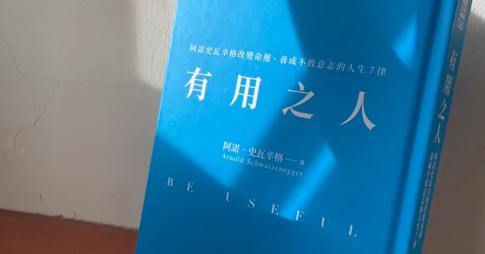
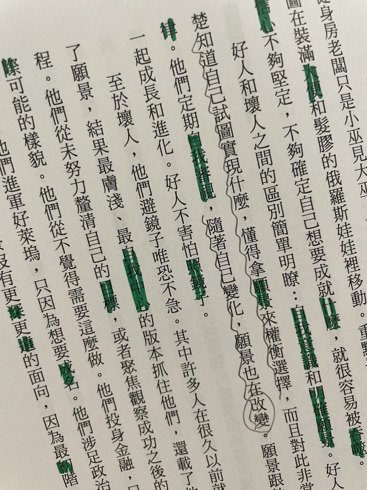

ビジョンは人生の錨 『Be Useful』を読む

「ビジョン」は、ふつうに言う目標や夢のことでもいいし、送りたい暮らしや、なりたい人、なりたい姿のことでもいいと思います。ぼんやりしていてもかまいません。実践するなかで少しずつ絞り込まれ、磨かれて、はっきりしていきます。
自分の希望、喜びや怒り、何が好きで、何を追い求めたいのか、どこへ旅をして、どんな人に出会って、どんな経験を得たいのかを考えてごらん。そのすべての過程が、君たちの未来をつくっていく。――『ハンター×ハンター』ウイング
旧作のアニメ『ハンター×ハンター』で、ゴンとキルアが天空闘技場での修行を終えて旅立つとき、ウイングが二人にかけた言葉で、ずっと私の心に残っています。以前の私には「ビジョン」という考え方がなく、ただひたすら、夢や、やりたいこと、打ち込める仕事を探し続けていました。夢がはっきりしさえすれば、きっと迷わず、地に足をつけて打ち込めると空想していたのです。
幸いなことに（同時に不幸なことに）、夢がなかなか見つからなかった長い間、この言葉は私の灯りでした。そして『Be Useful』を読んで、夢（あるいは、それをもっと具体的で、ありきたりでない「ビジョン」に言い換えたもの）が少しずつはっきりしてきたあとで、私のビジョンは、実はずっと日常の奥深くに寄り添っていたのに、気づいていなかっただけだと知りました。
本の中で、ビジョンについて大事だと思った考え方を、次にまとめます。
明確なビジョンがもたらしてくれるもの：ある決断が自分にとってよいか悪いかは、その決断が望む暮らしに近づけてくれるか、遠ざけてしまうかで決まる。
いい人は、自分が何を実現したいのかをはっきりわかっていて、ビジョンを物差しにして選択を見きわめることができ、それについてとても自分に厳しい。定期的に自分を見つめ直し、自分が変わるにつれて、ビジョンも変わっていく。
好奇心を保ち、情報に飢え、心を開いて、知識をうまく使う。
この本を読む機会があれば、著者の自己規律と粘り強さが人並みはずれていることに気づくでしょう。でもそれは、彼がとても明確で、はっきりしたビジョンを持っていて、それが強い原動力になっているからだ、とも読めます。
この記事は、本の中のいくつかの大事な部分を抜き出して、私自身の経験と、自分に言い聞かせたいことを加えたものです。特に、やり抜くこと、全力を尽くすこと、行動することは、私にいちばん足りないところです。努力が足りていないのではないか、言い訳をしていないかを見直して、自分のために、ほんの少しだけ無理をしよう、と思い出させます。（しかも今回は、誰かのためではなく、自分のための無理です！）
トップアスリートを例にすると、技術だけでなく、彼らは過程を視覚化できる。つまり、目を閉じて、試合の流れを思い浮かべ、見ることができる。
ここでいうビジョンの視覚化は、たぶん「運動イメージ（motor imagery）」のことです。クライミングのトレーニングの記事で読んだことがあって、自分も登る前に課題を観察して、ルートを考えるときに意識して練習しています（いちばん基本の、動画を撮って動きを直すことは、ほとんどやっていませんが）。
クライミングは、ほかのスポーツより、運動イメージのトレーニングが自然と必要なのではないか、と気になります。体力には限りがあって、ずっと壁に取りついて体で試し続けることはできないので、想像で試すことにより頼るからです。
鏡の前で自分の運動を見ていなければ、動きが正しいかどうか、わからない。筋肉量が足りているか、ラインがはっきりしているかも。
自分をちゃんと見ること。客観的に、誠実に。間違いに向き合う気持ちがあるからこそ、直して、よくなれます。いい部分も素直に受け入れて、強みを知って、自己肯定感を育てること。そうして初めて、力を無駄にせず、効果的に自分を鼓舞するやり方がわかって、謙虚に、そして自信を持てます。
その場にいない人たちは、静止した姿（たとえば雑誌）を通して君を知る。でも、会いに来てくれるその場の人たち、大切な人たちは、君の一挙一動と、それらの重要な場面のあいだのつなぎを観察して、評価する。完璧な比喩だ。人生は、ハイライトや大きな場面だけではない。
ここに出てくる「つなぎ」が好きです。大事でなさそうな、ふつうの、つなぎの部分こそ、いちばん気がゆるんで、ほころびが出やすいところかもしれません。もしかして……「つなぎ」こそが、人があなたをどう評価するかのカギで、成否のカギでもあるのでは？
そして、細かいところでほころびを出さないためには、「本当の自分を見せる」のがいちばんラクな選択です。役を演じるときのように、取りつくろう必要がありません。
最後の最後で一手及ばなかったとしても、かまわない。その過程で、きっとかなりすごいことを成し遂げているはずだから。
試して失敗することを恐れないのと同じで、最終的な結果が思うようにならず、失敗だったとしても、失敗していないものが必ずあります。たとえば、オリンピックで金メダルを取れなかったとしても、自分の奮闘の物語が多くの人をその競技に引きつけ、大事にしてもらうきっかけになるとか、選手として培った粘り強さが、コーチになっても、別の業界に行っても、人より粘れて、ストレスに強い力になるとか。ちょうど思い出したのが『重版出来！』です。柔道選手がけがでオリンピックの夢を追えなくなり、出版社で働く道に進む話で、原作の漫画もドラマも、とてもおもしろいです！
本の後半で出てくる「ジムでトレーニングするとき、毎回限界まで追い込むのは、一種の失敗だ」という言葉も好きです。毎回うまくいかないように見えて、実は毎回、目標に近づいているのです。
プランBはない。プランBとは、プランAをやり遂げることだ。……どんなに大きな夢にとっても、プランBは危険で、失敗のために存在する。
計画を実行するときに「全力でやれ！」と自分に言い聞かせるより、実行する前の、計画を立てるときに「ラクな道を選ぶな」と思い出させたいです。
私はやり抜くことに情熱を燃やしている。……大事なことは、簡単でも、まっすぐでもないことが多く、ほとんどいつも、タイミングや他人、たくさんの変動要素に左右される。
使わなければ衰える。
これは私にとって大きな戒めです。私は三日坊主の王様ですから（数少ない、自信を持って言えること……）。特に、これまで学んできたあれこれを思い出しました。フランス語、スペイン語、投資の資料など、最後は何の結果も成果も出ませんでした。たとえば、それで外国人の友だちができたとか、検定に受かったとか、ほかの投資で収入を作ったとか、そういうものです。これから学び直すなら、ある程度は復習し直すしかなく、その時間がもったいない無駄に感じます。
私がレンガ積みの仕事を選んだのは、それが追加のウェイトトレーニングのようだったからだ。
著者は、お金を稼ぐためや、将来の出費を抑えるための、ほかの仕事もしていたと書いています。
これは考える価値があります。いちばんいいのは、「ほかの仕事」もビジョンの実現に役立つことです。でも、そこまでいい選択肢がないなら、ビジョンから「気をそらす」ような仕事を選ばないよう、気をつけなければいけません。
私自身も、こういう「ひとつのことで、いくつものいいことがある」のが大好きです。レンガ積みは、お金も稼げるし、同時にウェイトトレーニングにもなります。
あるいは、後半の人助けの部分に出てくる例で、アメリカの作家デイヴィッド・セダリスは、散歩しながらゴミ拾いをして、ゴミ収集車に自分の名前がつき、イギリスの女王とアフタヌーンティーまでしたそうです。散歩しながらゴミ拾いをして、運動しながら環境もよくなる。ビジョンとは関係ありませんが、自分の欲求を満たしながら、ほんの少し、ほとんど自分が損をしないくらいの力で、人を助けたり、環境をきれいにしたりできる。そういうことの積み重ねは、気づかないうちに自分の一部になり、収穫や、達成にさえなります。お得だと思いませんか？
ビジョンを世界に見せるときは、まるでもう実現したかのようにする。そうすれば、今この瞬間から努力を始めて、必ず実現させずにはいられなくなる。
まず大風呂敷を広げて、それから自分を追い込んで、その大風呂敷を実現させる、という考え方です！
